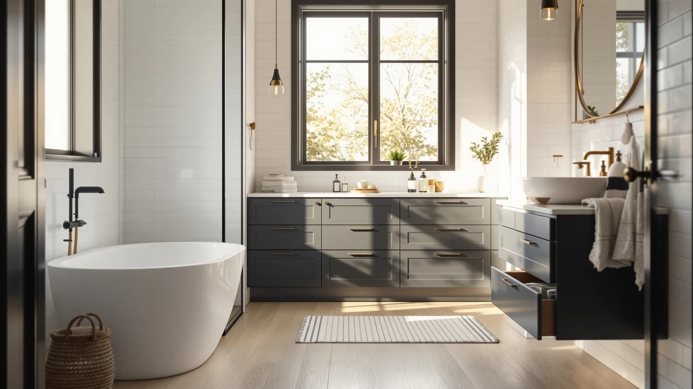

Best Under Bathroom Sink Storage Drawers (2026)
Prices and picks verified as of September 2026. Independent, reader-supported reviews.


Quick Answer
Among the best under bathroom sink storage drawers we compared, the Vtopmart 4 Pack Bathroom Organizer gives you four small, stackable drawers you can rearrange around a center pipe for $30.99. If your cabinet has plumbing running through the middle, the Aekenr 2 Pack 3 Tier Organizer splits into two towers that sit on either side of it instead.
Our pick: Vtopmart 4 Pack Bathroom Organizer — $30.99 Check Price on Amazon
Bottom line: our top pick is the Vtopmart 4 Pack Bathroom Organizer at $30.99. The best budget option is the Vtopmart 4 Pack Small Clear Stackable Storage Drawers at $24.69.
Things to Know Before You Buy
- Measure around the pipe first. A P-trap or shutoff valve in the center of your cabinet usually rules out a single wide drawer and points you toward a split or two-piece system instead.
- Stackable does not always mean modular. Some multipacks only stack in one fixed configuration, so check whether the drawers separate and sit side by side if your cabinet is wider than it is tall.
- Clear drawers save you from opening every one. A clear front or lid lets you spot what is inside without pulling a drawer all the way out, which matters most in a cabinet you already have to crouch to reach.
- Expandable widths cost more but fit odd cabinets. If your under-sink opening is not a standard width, an adjustable drawer avoids the gap or overhang you get from a fixed-size set.
The best under bathroom sink storage drawers have to work around a curved P-trap, a shutoff valve, and a water supply line rather than an empty box of cabinet space. Most standard bins ignore that layout and end up half-empty on one side while the other overflows. A drawer system built with that obstruction in mind turns the same cabinet into sorted, usable storage instead of a pile you dig through on your knees.
We compared seven under-sink drawer and bin systems from our product database on price, stated dimensions, material, and how each one accounts for plumbing in the middle of the cabinet. None of us installed these drawers ourselves, so every claim below comes from manufacturer specs, listing details, and patterns in verified owner reviews rather than a physical trial. That distinction matters more here than in most categories, since a drawer that looks great in a photo can still jam against a pipe the listing photos conveniently avoid showing.
Our top pick is the Vtopmart 4 Pack Bathroom Organizer at $30.99, four stackable drawers with a metal frame that you can split, stack, or spread out depending on how your cabinet is shaped. If your cabinet has a center pipe blocking a straight run of drawers, the Aekenr 2 Pack 3 Tier Organizer and the Biboraya Expandable Under Sink drawer both solve that problem in different ways, and we break down which one fits which layout below.
Why You Should Trust Us
Ilane Tall covers bathroom organization and small-space storage for Best Bathroom Storage, with a focus on products that have to fit around plumbing rather than sit on an open shelf. We do not run a physical testing lab and we did not install every drawer system in this guide under our own sinks. Instead, we compare listed dimensions, materials, and pricing against patterns in verified owner reviews, and we say so directly whenever a rating or review count is not available for a product. That research process, not a testing lab, is how we arrived at our picks for the best under bathroom sink storage drawers below.
How We Picked
We started with every under-sink organizer and drawer set in our product database, then narrowed the list to options that publish a stated size, width range, or pack configuration, since a listing with no dimensions is a guess before it is a purchase. We kept both stackable bin-style drawers and true pull-out drawer units in the mix, because a cabinet with a clear run to the back wall works fine with stacked bins while a cabinet with a pipe in the middle usually needs a split or expandable design instead. We also checked pricing against the $25 to $55 range typical for this category, so the picks below span a small kit and a larger expandable system without drifting into cabinet-replacement territory.
How We Compared
We compared the seven finalists on four factors: price, stated width or footprint, material, and how each design handles a center obstruction like a pipe or valve. Where a listing gave an adjustable range, such as the Biboraya Expandable Under Sink drawer at 15.3 to 24.2 inches wide, we noted it against fixed-size sets so you know which ones need an exact cabinet measurement before you order. We also read through available owner reviews for recurring issues, like drawers that stick when fully loaded or lids that pop off during a slide, and we call those out in the pros and cons for each pick below. That side-by-side comparison is the difference between the best under bathroom sink storage drawers and a set of bins that happens to fit under a sink.
Our Picks

Vtopmart 4 Pack Bathroom Organizer
What we like
- Four separate drawers instead of one bin, so you can pull the one you need without touching the rest
- Metal frame construction rated to hold heavier items like cleaning bottles without sagging
- Stack in a column or spread across a shelf depending on your cabinet shape
Flaws but not dealbreakers
- Standard sizing means it may leave a gap next to a wide pipe or valve
- Four small drawers hold less total volume than a single large bin at a similar price
| Material | Metal / wood |
| Size | S-Standard (4 Pack) |
The Vtopmart 4 Pack Bathroom Organizer is our top pick because it treats an under-sink cabinet as a set of separate problems instead of one big empty box. Each of the four drawers has its own metal frame, so you can stack all four in a column against the back wall, split two and two on either side of a center pipe, or spread them across a wider cabinet floor. At $30.99, it costs less than most single expandable drawer units in this guide while covering roughly the same footprint once you account for stacking. The wood-look lids also mean the set does not read as an obvious plastic bin if the cabinet door stays open for daily use.
Owners report the metal frame holds up better than pure plastic organizers when loaded with heavier items like a gallon of cleaning solution or a stack of towels, though the drawers themselves are still sized for small to medium bottles rather than bulk containers. The fixed drawer dimensions are the main tradeoff: if your cabinet has an unusually wide pipe running through the center, you may need to pair this set with a narrower option like the Vtopmart 4 Pack Small Clear rather than relying on it alone. For a standard cabinet with a straightforward layout, it remains the easiest option to fit around whatever shape you are working with.

Vtopmart 4 Pack Large Stackable
What we like
- Larger drawer capacity than the standard 4 Pack Bathroom Organizer at a similar price
- Metal frame construction matches the rest of the Vtopmart lineup, so mixing sets looks consistent
- Stackable design uses vertical space in a tall cabinet instead of spreading everything across the floor
Flaws but not dealbreakers
- Larger drawers take up more footprint, which can crowd a shallow or narrow cabinet
- No listed width range, so measuring your cabinet opening before ordering matters more than usual
| Material | Metal / wood |
| Size | Large Storage Bins |
The Vtopmart 4 Pack Large Stackable trades the compact footprint of the standard organizer for bigger individual drawers, which makes sense once you are storing backup shampoo bottles, a spare toilet paper multipack, or cleaning supplies rather than washcloths and small toiletries. At $35.99, it costs about five dollars more than the standard 4 Pack Bathroom Organizer, and that difference buys real capacity rather than a cosmetic upgrade. The bins share the same metal-frame construction as the rest of the Vtopmart lineup in this guide, so the two sets stack together if you need both drawer sizes in one cabinet.
The tradeoff is footprint. Larger bins need more floor space inside the cabinet, and a center pipe or valve can eat into that space faster than it would with the smaller drawers. If your under-sink cabinet is deep and mostly obstruction-free, this set gives you more usable storage per dollar than the smaller options in this guide. If it is narrow or split by plumbing, measure carefully before ordering, since Vtopmart does not list an adjustable width range for this set the way Biboraya does for its expandable drawer.

Vtopmart 3 Pack Clear Stackable
What we like
- Clear drawer fronts let you spot contents without opening each one
- Three-pack size sits between the small and large Vtopmart sets for a middle-ground footprint
- Stackable frame matches the rest of the Vtopmart lineup for mix-and-match setups
Flaws but not dealbreakers
- Vtopmart has not published exact dimensions for this specific 3 pack, so confirm fit before buying
- A 3-pack leaves an odd number if you are trying to split drawers evenly on both sides of a pipe
| Material | Metal / wood |
| Size | — |
The Vtopmart 3 Pack Clear Stackable fills the gap between the metal-and-wood organizer sets and the fully clear small bins later in this guide. Each drawer uses a clear front, so you can tell whether it holds razors, cotton rounds, or cleaning wipes without sliding it open, which is useful in a cabinet you already have to crouch or kneel to reach. At $36.09, it lands close to the Large Stackable set in price despite shipping one fewer drawer, which reflects the added cost of clear plastic tooling over the metal-frame design used elsewhere in the lineup.
Vtopmart has not published exact outer dimensions for this specific three-pack in the listing, which is the main gap in an otherwise straightforward product. If your cabinet has tight side clearance, measure the drawers against the Vtopmart 4 Pack Small Clear set below for a closer size reference before ordering. The three-drawer count also means you cannot split it evenly on both sides of a center pipe the way you can with the Aekenr 2 Pack 3 Tier Organizer, so it works best in a cabinet with a clear run along one wall rather than plumbing down the middle.

Vtopmart 4 Pack Small Clear
What we like
- Smallest and least expensive drawer set in this guide at $24.69
- Compact 7.5 by 6 by 4.4 inch footprint fits narrow gaps other sets cannot
- Clear construction makes it easy to sort small items like hair ties, razors, or cotton swabs
Flaws but not dealbreakers
- Limited capacity means it works best as a supplement to a larger set rather than your only drawers
- Small size is a poor fit for bulkier items like spray bottles or towel stacks
| Material | Metal / wood |
| Size | 7.5"D x 6"W x 4.4"H |
At $24.69, the Vtopmart 4 Pack Small Clear is the least expensive option in this guide, and its 7.5 by 6 by 4.4 inch drawers are also the smallest by a clear margin. That size is exactly the point: it is built to fit the narrow strip of cabinet floor next to a P-trap or shutoff valve that a larger drawer set simply cannot reach. Four of these small drawers take up roughly the same footprint as one large bin, but split into compartments small enough for hair ties, razors, and travel-size bottles.
The clear plastic construction means you can see what is in each drawer without opening it, which matters when the drawers are tucked into an awkward corner you are not going to check twice. The obvious limit is capacity: these drawers are not built for cleaning supplies, spare towels, or anything bulkier than small toiletries, so most cabinets will need to pair this set with a larger option like the Vtopmart 4 Pack Bathroom Organizer rather than relying on it alone. Used as a supplement rather than a whole solution, it fills the gap other drawer sets in this guide leave empty.

Aekenr Under Sink Organizer and
What we like
- Two-piece design splits to sit on either side of a center pipe instead of one blocked drawer
- Three-tier stack on each side adds vertical storage without widening the footprint
- Priced at $39.99, it covers a full split-cabinet layout in one purchase
Flaws but not dealbreakers
- Two separate three-tier towers take more setup than a single fixed drawer block
- Overall capacity per side is smaller than one wide drawer, since the plumbing gap sets the width limit
| Material | Metal / wood |
| Size | 2 Pack 3 Tier |
Most drawer organizers assume a clear, unobstructed run along the back of the cabinet, and the Aekenr 2 Pack 3 Tier Organizer is built for the cabinets that do not have one. It ships as two separate three-tier towers rather than one wide unit, so you place one tower on each side of a center pipe or shutoff valve instead of trying to fit a single drawer block around it. At $39.99, it costs more than the single-piece Vtopmart sets, but it solves a layout problem those sets cannot: a pipe running straight down the middle of the cabinet floor.
Because each tower is narrower than a full-width drawer set, per-side capacity is smaller than what you would get from an unobstructed cabinet with a single large bin. That is the tradeoff for fitting around plumbing rather than ignoring it. Owners with a split-layout cabinet report the two-tower design as the more practical fix compared to squeezing a single wide drawer against a pipe and losing the space behind it. If your cabinet has a clear run with no center obstruction, a single-piece set like the Vtopmart 4 Pack Large Stackable will use that space more efficiently than splitting it in two.

1 Pack Expandable Under Sink
What we like
- Adjustable width from 15.3 to 24.2 inches fits cabinets a fixed-size drawer would not
- Single unit expands around a center pipe instead of requiring a split two-piece setup
- Widest adjustable range of any pick in this guide
Flaws but not dealbreakers
- Highest price in this guide at $54.99
- Expandable mechanisms add moving parts that fixed drawers do not have, so check the slide hardware before loading it heavily
| Material | Metal / wood |
| Size | 1 Pack-15.3"-24.2"W |
The Biboraya 1 Pack Expandable Under Sink drawer solves the measuring problem the rest of this guide keeps coming back to: an under-sink cabinet that is wider or narrower than the standard sizes other brands build around. Its stated range of 15.3 to 24.2 inches wide covers most bathroom vanities without you needing to special-order anything, and it does it as one adjustable unit rather than the two-piece split approach the Aekenr organizer uses for the same center-pipe problem. At $54.99, it is the most expensive pick in this guide, and that price reflects the adjustable slide hardware rather than premium materials.
An expandable drawer has more moving parts than a fixed stackable bin, which is worth checking against owner reviews before you load it with anything heavy, since slide mechanisms are typically the first point of wear in this category. For a cabinet with a known, standard width, a fixed-size set like the Vtopmart 4 Pack Bathroom Organizer costs less and has fewer parts that can eventually loosen. For a cabinet with an odd width or plumbing you have not measured precisely, the adjustable range here removes the guesswork the fixed-size sets in this guide require.

GeeBom Under Sink Organizer Pull
What we like
- Pull-out sliding design brings contents forward instead of requiring you to reach into the back of the cabinet
- Adjustable height range of 13.8 to 16.9 inches fits cabinets with varying shelf clearance
- 11.8 by 15.9 inch footprint fits most standard single-sink cabinets without modification
Flaws but not dealbreakers
- Sliding mechanism adds a moving part that stationary bins do not have
- Height adjustability is more limited than the width range on the Biboraya expandable drawer
| Material | Metal / wood |
| Size | 11.8"W x 15.9"D x 13.8-16.9"H |
The GeeBom Under Sink Organizer Pull is built around a single idea: a drawer that slides out toward you is easier to use than a bin you have to lean into and dig through. At 11.8 inches wide by 15.9 inches deep, it fits the footprint of most standard single-sink cabinets, and its height adjusts from 13.8 to 16.9 inches to work around shelf brackets or pipe clearance that varies from one cabinet to the next. At $39.99, it costs the same as the Aekenr 2 Pack 3 Tier Organizer, giving you a choice between a pull-out single unit and a split two-tower design at the same price point.
The sliding rail is the tradeoff for that convenience. It is one more mechanical part than a stationary stackable bin has, and it is worth checking that the rails extend fully under load rather than binding partway out. The height range is also narrower than the width range Biboraya offers on its expandable drawer, so it solves a shelf-clearance problem better than a width problem. For a cabinet where reaching to the back is the main annoyance rather than an odd cabinet width, the pull-out design here is the more direct fix among the picks in this guide.
Quick Comparison
| Product | Material | Price | Rating | Best for | Get it |
|---|---|---|---|---|---|
| Vtopmart 4 Pack Bathroom Organizer | Metal / wood | $30.99 | 4 | Standard cabinets, no center pipe | View on Amazon → |
| Vtopmart 4 Pack Large Stackable | Metal / wood | $35.99 | 4 | Deeper cabinets, bulk items | View on Amazon → |
| Vtopmart 3 Pack Clear Stackable | Metal / wood | $36.09 | 4 | Checking contents at a glance | View on Amazon → |
| Vtopmart 4 Pack Small Clear | Metal / wood | $24.69 | 4 | Narrow gaps beside plumbing | View on Amazon → |
| Aekenr Under Sink Organizer and | Metal / wood | $39.99 | 4 | Cabinets split by a center pipe | View on Amazon → |
| 1 Pack Expandable Under Sink | Metal / wood | $54.99 | 4 | Odd or unknown cabinet widths | View on Amazon → |
| GeeBom Under Sink Organizer Pull | Metal / wood | $39.99 | 4 | Pull-out access, less crouching | View on Amazon → |
What is the best material for under-sink storage drawers?
Metal-frame drawers, like the Vtopmart 4 Pack Bathroom Organizer, tend to hold up better under heavier items such as cleaning bottles, while clear plastic drawers, like the Vtopmart 4 Pack Small Clear, make it easier to see contents…
How do I fit storage drawers around a pipe under my bathroom sink?
Measure the clearance on both sides of the pipe or valve before ordering.
The Competition
We also looked at open wire baskets and tension-rod shelf systems during research, but left them out of this guide because neither one is a true drawer or bin: wire baskets expose contents to dust and moisture, and tension-rod shelves add a flat surface rather than an enclosed compartment. If an open shelf is closer to what you are after, our guide to the best bathroom storage bins covers that category separately.
Single fixed-width organizers with no adjustability were another category we passed on for cabinets with irregular plumbing. A rigid drawer block looks like a fix in listing photos, but it either sits awkwardly next to a pipe or does not fit at all once you measure around the trap. If you are still deciding between an enclosed drawer system and a simpler bin setup for a small cabinet, our guide to the best under-sink bathroom organizers compares both approaches in more depth. Across every option we researched, the Vtopmart 4 Pack Bathroom Organizer remains our top pick among the best under bathroom sink storage drawers for a standard cabinet layout.